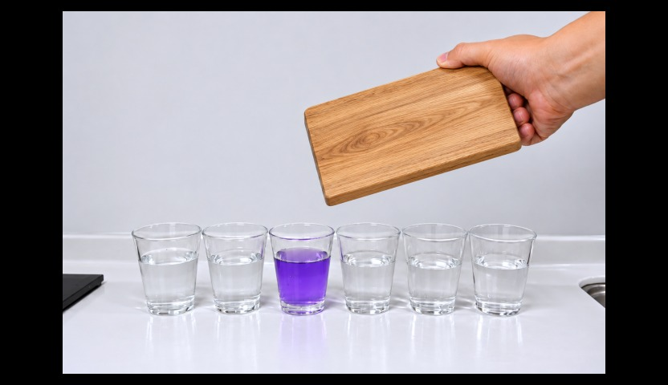
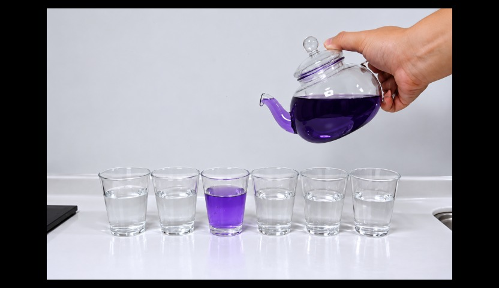

Opposite 3D rotations with similar 2D motion: what current XYZ adds
Supplementary material for the response to Reviewer MJ44 (Q3), ICLR 2027 Submission 14595.
- Ffg (current XYZ) is the foreground guidance map from the paper (Sec. 3), shown as RGB = (XYZ + 1) / 2. Gray marks pixels without a foreground handle.
- Depth change is each visible point's depth change since frame 0, taken from Ffg: red = closer, blue = farther (±0.4 normalized units). The leading end turns red in one direction and blue in the other, although the 2D motion is similar.
Wooden board example
Toward: left end turns toward the camera; Away: left end turns away from the camera.
| Input first frame | Ffg: current XYZ | Depth change since frame 0 | Generated (newer checkpoint) | |
|---|---|---|---|---|
| Toward |  |  |  |  |
| Away |  |  |  |  |
Teapot rotation example
Toward: spout turns toward the camera; Away: spout turns away from the camera.
| Input first frame | Ffg: current XYZ | Depth change since frame 0 | Generated (newer checkpoint) | |
|---|---|---|---|---|
| Toward |  |  |  |  |
| Away |  |  |  |  |